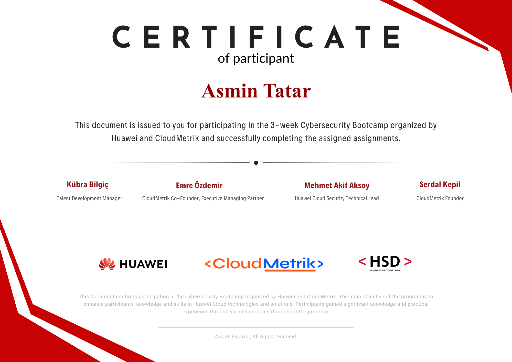
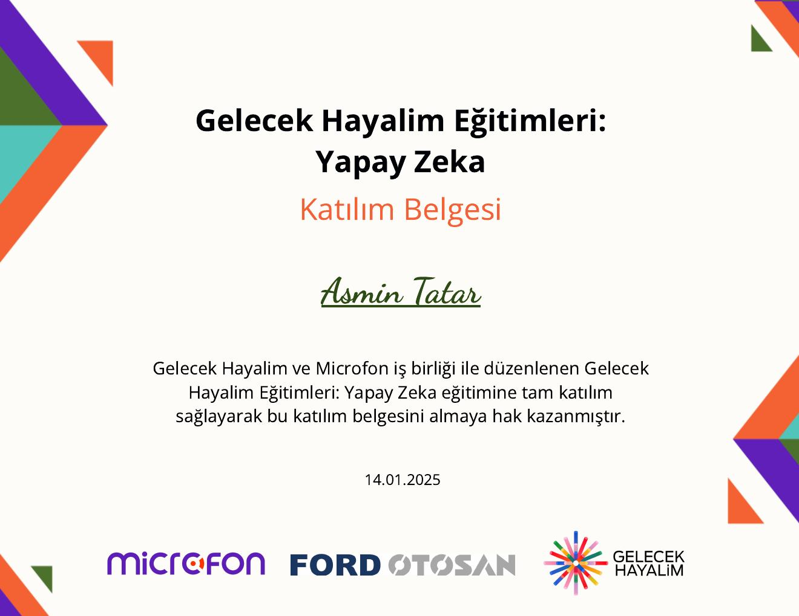
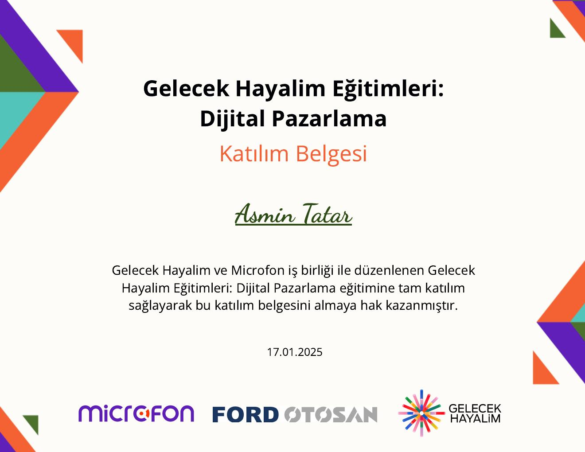

NaviCane
An assistive technology project designed to support safer mobility for visually impaired individuals. The work includes sensor-data processing, data analysis and software development.
Project LeadershipData AnalysisSoftware Development
NC
SOFTWARE ENGINEERING · CYBERSECURITY · DATA
Software Engineering student focused on software development, cybersecurity and data-driven problem solving.
I am a full-scholarship Software Engineering student at Istanbul Health and Technology University. My work spans software development, data analysis, network systems and cybersecurity.
I enjoy turning real-world problems into practical, measurable solutions and working collaboratively from idea to implementation.
An assistive technology project designed to support safer mobility for visually impaired individuals. The work includes sensor-data processing, data analysis and software development.
Python-based tool using Scapy and PyShark to capture and analyze real-time network traffic, with an interactive Dash interface for protocol, IP, port and time-series analysis.
A PHP and MySQL web application for managing aid requests and needs during disaster scenarios, including backend data processing and record management.
A Unity game project focused on movement mechanics, user interaction, obstacle avoidance and fundamental game physics.
03 — LEADERSHIP
TÜBİTAK University Students Research Projects Support Program
PROJECT LEAD · NAVICANE
As project lead, I coordinate the NaviCane team and contribute to the software, sensor-data processing and data-analysis workflow of the project.
Hands-on experience in IT systems and network management, security-event monitoring and analysis, basic penetration testing and incident-response processes.
Python · Java · C · C++
Unity · PHP · MySQL · Ubuntu VM · Google Colab
Cybersecurity · Data Analysis · Network Analysis · Software Development
Selected training and bootcamp certificates.

3-week bootcamp · assignments successfully completed
View certificate ↗

B.Sc. Software Engineering · Full Scholarship · GPA 2.74 / 4.00
Van, Türkiye · Diploma Grade 90.21 / 100